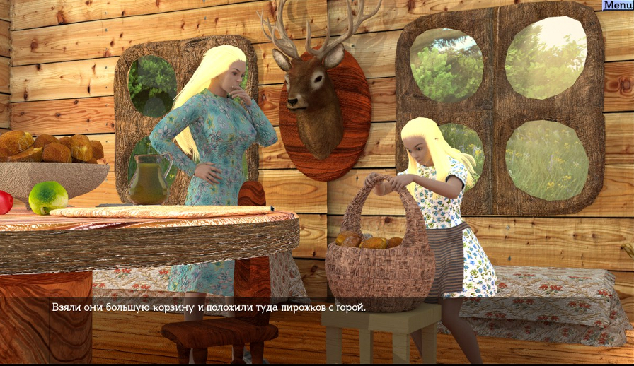
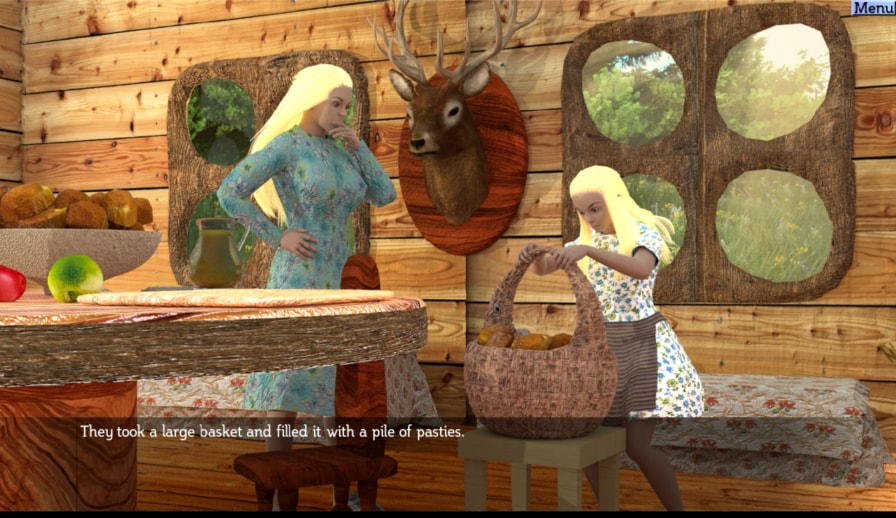
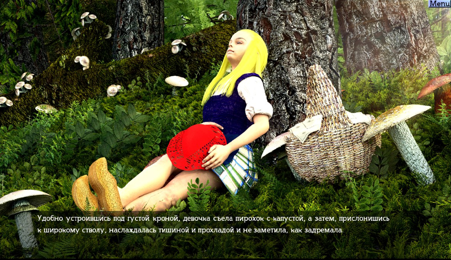
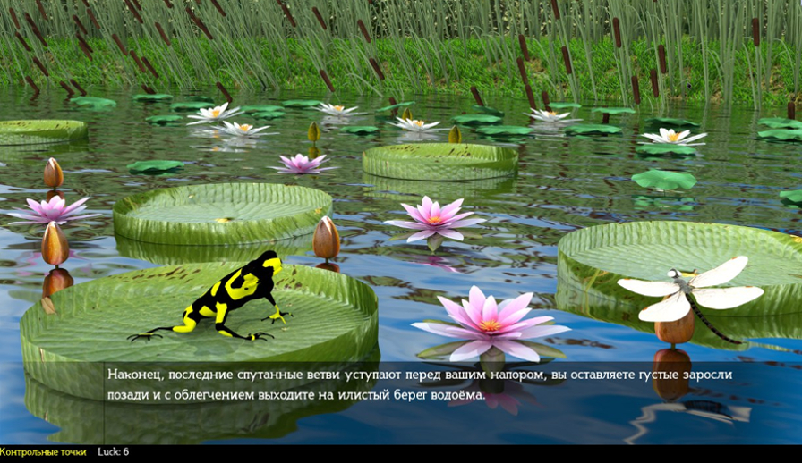
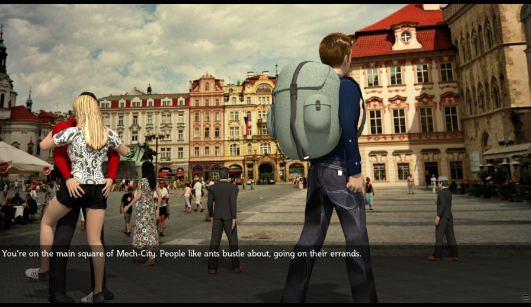
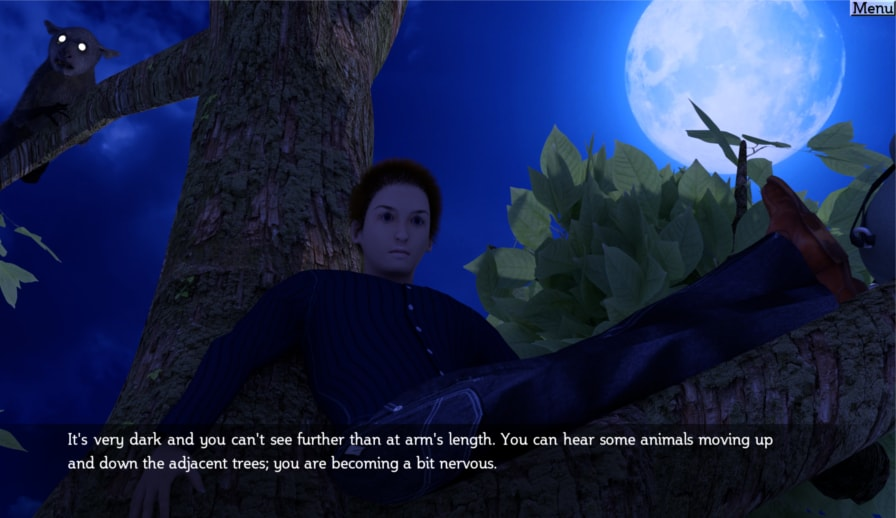
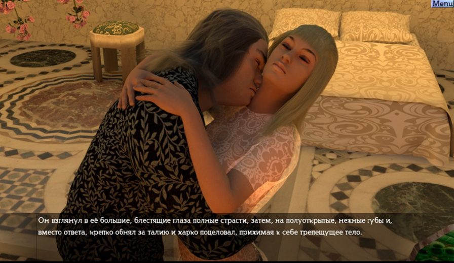
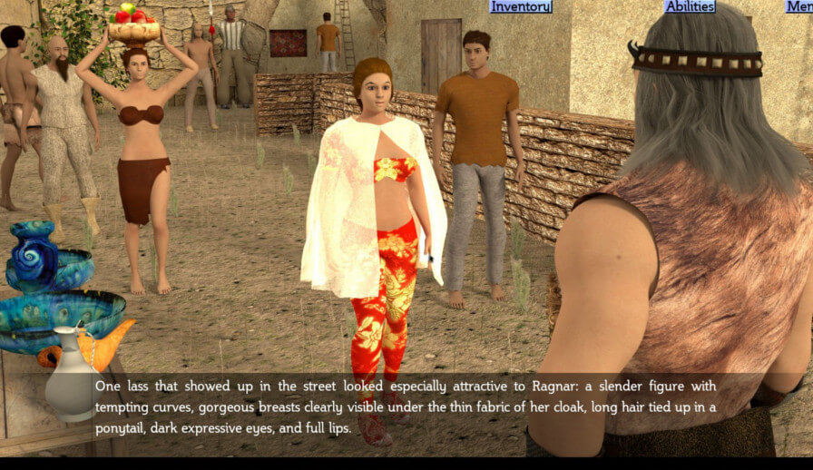

"Return of Red Riding Hood"
  This visual novel is a collection of alternative realities. How events would turn out and how they end will depend on your choices.
Visit wolf's den and solve his secret, or try to tame the wild beast.
Eat a pasty with mushrooms and experience something new, or feed it to the old lady, because it's her favorite filling.
Find out the real reason why Wolf attacked Red Riding Hood's Grandmother.
Main features
- Multiple endings
- Thriller, melodrama and comedy inside one game
- More than 150 colorful 3D scenes
- Cross-platform
- Steam trading cards
- Steam achievements
- Steam Cloud
"Wild Island Quest"
  Wild Island Quest is a visual novel about the adventures of the teenagers on a dangerous island.
You can go to the Wild Island with the main characters and delve into a deadly adventure. Take one or a few friends with You, but keep in mind that all characters have their strengths and weaknesses, so the end of Your journey will depend on Your choice. Preparing for the trip, thoroughly plan your actions, take only what You really need. Any detail can be vital.
Enjoy the Wild Island's nature and beware its inhabitants!
Main features
- Non-linear plot
- Different endings
- Possibility to travel alone or with friends
- Every character has their strengths and weaknesses, and can give benefits or be a burden
- Unique picture to every location
"The Barbarian and the Subterranean Caves"
 
The Barbarian and the Subterranean Caves is an adventure visual novel about the heroic feats of the intrepid warrior Ragnar.
Now you can become the famed adventurer Ragnar and bravely seek out all-new original adventures in this exciting game.
Delve into the mysteries of the caves and discover what lies in waiting below. Ready your sword: you will investigate sprawling, far-reaching webs of intrigues and unmask the cunning evildoer who stands in your way.
Can you tell a friend from a foe; who wants to manipulate you and who really needs your help?
Ragnar has six qualities you can choose from; each one influences the plot in its own way. But you must strategize well because you may only choose three.
Conquer all those who oppose you, overcome difficulties, let your conscience guide you through tough choices, and don't let lies ensnare you in a sticky web.
Take control over your hero's destiny to unlock the multiple endings and get the richest rewards.
Discover the truth in the darkest depths of the subterranean caves…
Main features
- Non-linear, choose-your-own-adventure plot
- Unique endings to find
- More than 300 detailed illustrations
- Mosaic plot that completely opens by only completing a few storylines
- Cross-platform compatibility (Windows, Mac, Linux)
- Steam trading cards and badges
- Achievements
- Steam Cloud support